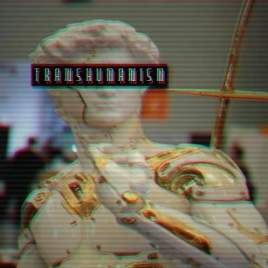

I’m an AI engineer deeply interested in infrastructure and system design.
Most of my time goes into building and experimenting with things like LLM serving systems, AI agent orchestration, quantization, fine-tuning, generative AI tools, performance optimization, scalable backend architectures, and blockchain systems. I like understanding how these pieces behave in real systems, not just in theory.
I’m curious about the intersection of AI systems, distributed systems, performance engineering, product scalability, and applied optimization theory. Building bias >> Tutorials and Reading. I try to reason from first principles and occasionally borrow ideas from game theory when thinking about incentives, trade-offs, and system dynamics.
Outside of engineering, I’m interested in transhumanism, history wars, civilizational power dynamics, and singularity-focused sci-fi.
acali — An agentic Telegram system integrating LLMs for calendar interaction and real-world task orchestration.
CPU vLLM Server — Local-first LLM serving infrastructure optimized for CPU environments, focusing on performance tuning and deployment realism.
AEX (Auto Execution Kernel) — In-progress execution control layer for AI agents introducing governance, budget enforcement, and capability-aware orchestration.